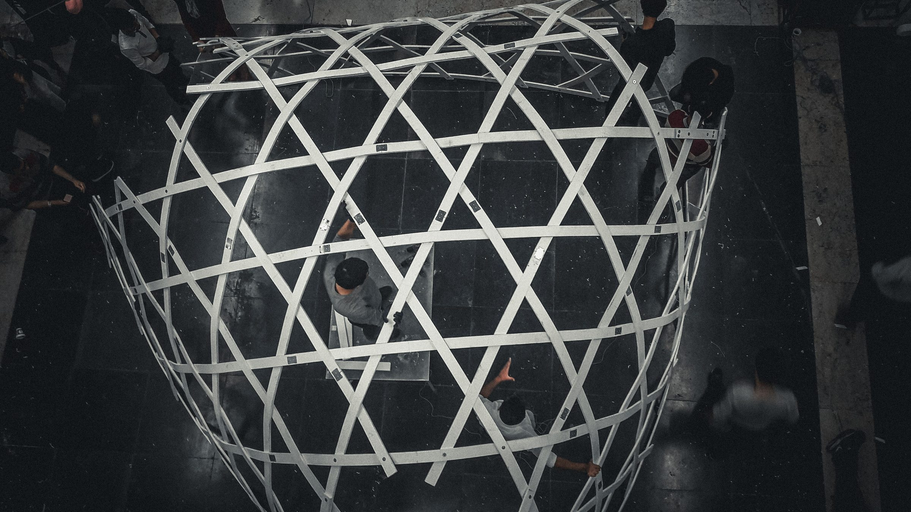
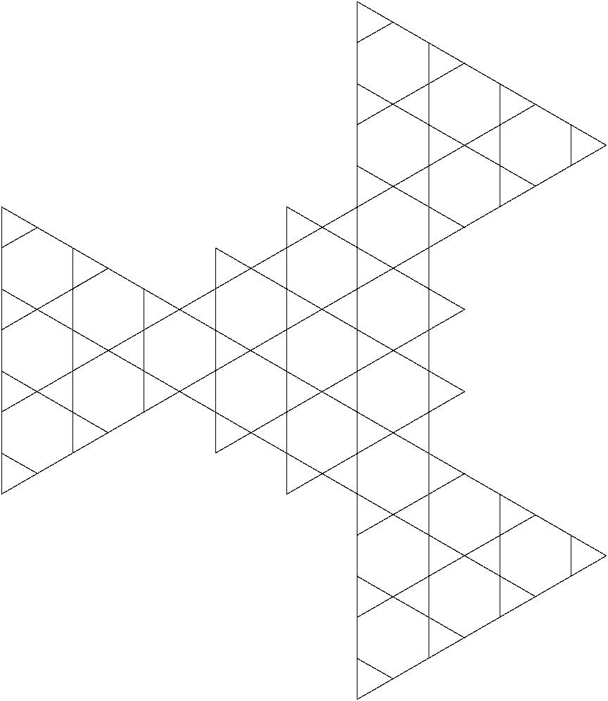
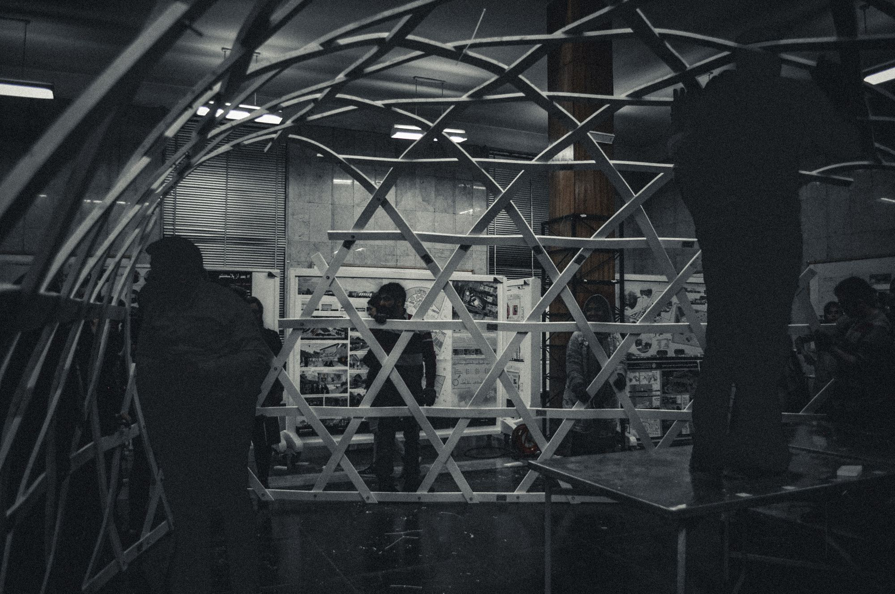
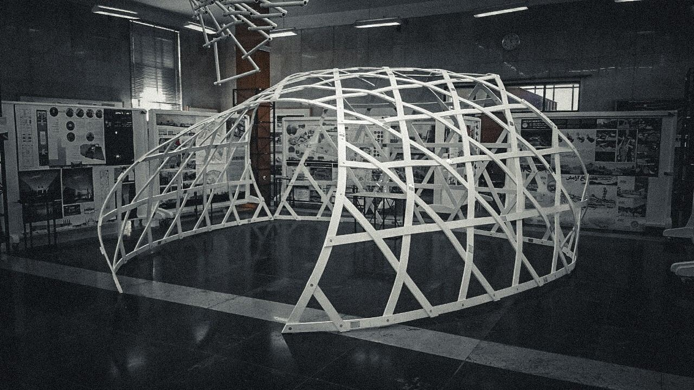

Projects / 14
Active Bending Gridshell
Bending-Active Gridshells workshop: form found through elastic bending
An active-bending gridshell is a doubly curved lattice built from long, initially straight and flexible members that are bent elastically into shape. The bending stresses stored in the members, the connections of the grid and its double curvature together give the structure its stiffness: form, structure and assembly are found together instead of being imposed.
Design
Light, quick to erect and economical in material, gridshells can span large areas with very little matter, from Frei Otto's Mannheim Multihalle (1975) to the Weald and Downland and Savill gridshells in England. The team studied these precedents and form-found a triangulated gridshell digitally.
Details
In a three-day workshop at the Faculty of Architecture of the University of Tehran, the gridshell was cut, assembled and raised at full scale.
Form found through elastic bending
An active-bending gridshell is a doubly curved lattice built from long, initially straight and flexible members that are bent elastically into shape. The bending stresses stored in the members, the connections of the grid and its double curvature together give the structure its stiffness: form, structure and assembly are found together instead of being imposed.

Precedents
Light, quick to erect and economical in material, gridshells can span large areas with very little matter, from Frei Otto's Mannheim Multihalle (1975) to the Weald and Downland and Savill gridshells in England.
The workshop
In a three-day workshop at the Faculty of Architecture of the University of Tehran, the team studied these precedents, form-found a triangulated gridshell digitally and then cut, assembled and raised it at full scale.


Process
In a three-day workshop the team studied the precedents, form-found a triangulated gridshell digitally, and then cut, assembled and raised it at full scale.